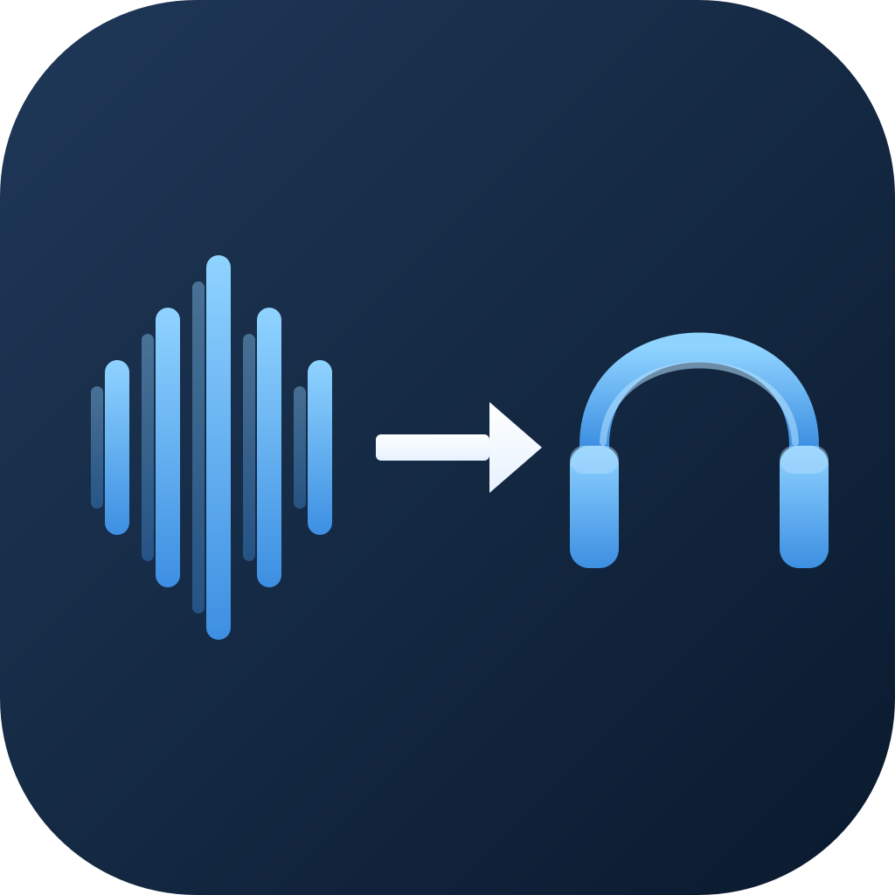

Route audio between any two devices on your Mac.
SoundRoute is a lightweight macOS menu bar utility that pipes audio from any input device (microphone, line-in, USB interface) to any output device (speakers, headphones, virtual outputs). Pick an input, pick an output, hit Start.